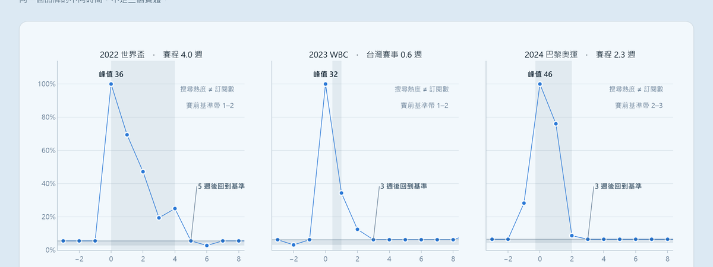

專案摘要 / 02 · 陳嘉翔
賽事熱度在賽後多久回到原點？
Hami Video（中華電信影視平台）× 三場國際賽事 · Google Trends 台灣，週解析度 2021-08 到 2026-07（n=261） · 外部求職者以公開資料製作，非中華電信內部文件
![QR code，開啟線上互動圖表]()
賽事帶來的是脈衝，不是階梯。
定案句：賽事熱度在賽後 1–2 週內完全回到賽前基準，三場皆然——在這份資料的解析度下觀測不到任何殘留提升。

三場賽事，同一次查詢、同一尺度，直接可比
| 賽事 | 賽程(週) | 峰值 | 爆發倍率 | 賽前基準帶 | 回到基準 |
|---|---|---|---|---|---|
| 2022 世界盃 | 4.0 | 36 | 36.0× | 1–2 | 5 週 |
| 2023 WBC | 0.6 | 32 | 16.0× | 1–2 | 3 週 |
| 2024 巴黎奧運 | 2.3 | 46 | 23.0× | 2–3 | 3 週 |
結論不依賴任何單一數字。 爆發倍率的分母（賽前基準）本身存在漂移，跨年比較並不乾淨。 較為穩固的觀察是三場皆於 3 至 5 週內回到基準帶， 而賽程長度自 0.6 週至 4.0 週不等，結果仍然一致。 衰退形狀的差異，幾乎可完全歸因於賽程長度的機械效果。
唯一的外部參照
11.2×
官方新聞稿（2023-03-24）：WBC 期間訂閱數較去年同期成長
16.0×
本分析：峰值 ÷ 賽前基準中位數
兩者定義不同，不可直接比較，也不宣稱吻合。 官方為訂閱數 YoY，本分析為搜尋熱度的峰值比。可陳述者僅為量級相近。 此為目前唯一能為「搜尋熱度不等於訂閱數」此一限制提供外部參照的資料點。
條件對照
| 能力項目 | 本專案的對應證據 | 位置 |
|---|---|---|
| 判準先於資料 | 閾值與事件選擇規則於檢視資料前存檔。事後修正標示為事後，原數字保留不刪：基準窗遭前一事件污染，故將 8 週 min–max 調整為 20 週 p25–p75 | docs/decision-trail.md |
| 結論所依賴的量有測試 | 14 項 pytest 蓋住四個會改變結論卻不會報錯的函式；其中一項釘住基準帶的崩潰點，該定義並非無條件安全 | scripts/metrics.py｜tests/ |
| 驗證產出的成品，不是記憶體裡的物件 | 解析寫出的 HTML：shape 幾何、三種寬度的標註碰撞與溢出、標註是否被資料線穿過 | scripts/verify_charts.py |
| 不穩定來源的取用紀律 | 實測顯示配額機制為觸發式封鎖而非節流（0/30 橫跨 47.5 小時），因此改採 fail-fast；每次請求的成敗均寫入 append-only 紀錄 | logs/quota_attempts.csv |
| 解析度作為方法論 | 同一場賽事，週級解析度將峰值判在開幕週，日級解析度則判在決賽日。兩張都交付，因為分歧本身就是結果 | charts/daily-vs-weekly.html |
我不宣稱的事
沒有任何訂閱、退訂、註冊或轉換資料。本分析僅能觀測搜尋關注度。
不宣稱因果。亦不使用預設有識別策略的方法名。三場之間賽事類型與賽程長度完全混淆（n=3），結論只能是描述性的。
不含模型，也不是每日運行的管線。價值在約束與工程紀律，不在演算法。
深色模式未做。兩種模式應各自訂定調色盤而非自動反轉，尚未執行。
四項驗證未完成（可重現性、MOD 對照、事件詞、兩個日級窗）。均遭配額限制。逐項評估「未補齊是否構成交付阻斷」，結論皆為不構成阻斷。
限制六條完整版見 README.md，第一條為「搜尋熱度不等於訂閱數」：
賽事期間訂閱、賽後不再搜尋但未退訂者，本資料無法區分。
判準與推翻歷程見 docs/decision-trail.md（append-only）。
本頁所有數值由 scripts/build_onepager.py 於產生時自快照重新計算，非手動填寫。